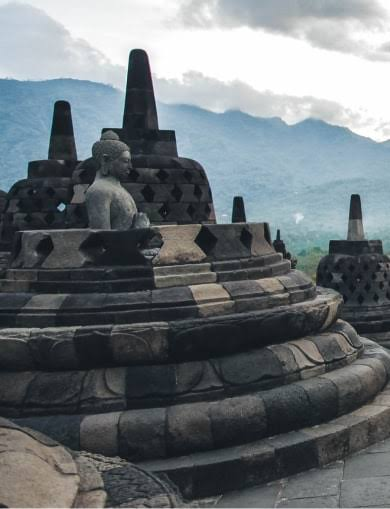
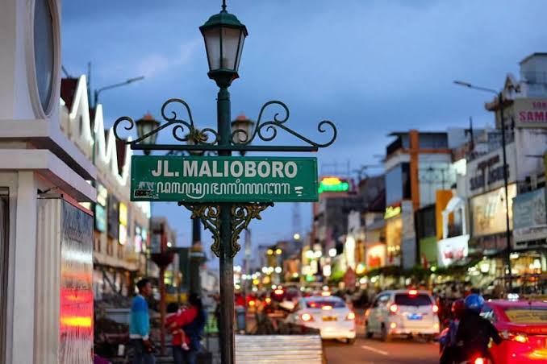
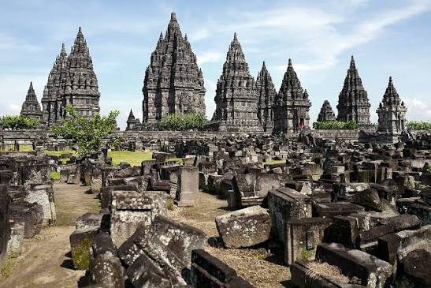
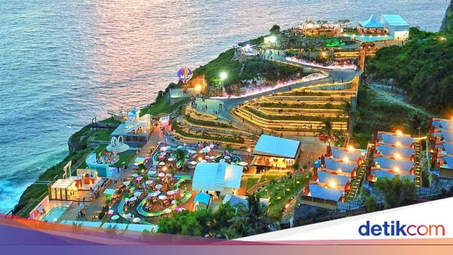

Candi Borobudur adalah salah satu situs warisan dunia UNESCO yang paling terkenal di dunia. Candi Borobudur terletak di Kabupaten Magelang, Jawa Tengah, Indonesia, candi ini merupakan candi Buddha terbesar di dunia dan menjadi salah satu tujuan wisata paling populer di Asia Tenggara. Mari kita jelajahi keindahan dan keajaiban Candi Borobudur, dan dapatkan informasi seputar sejarah, arsitektur, hingga informasi tiket masuk Candi Borobudur.

nama jalan utama yang sangat terkenal di pusat Kota Yogyakarta, yang membentang dari Tugu Yogyakarta sampai ke Titik Nol Kilometer atau perempatan Kantor Pos. Tempat ini menjadi pusat wisata belanja, budaya, dan kuliner yang ramai dikunjungi oleh wisatawan.

adalah bangunan candi bercorak agama Hindu terbesar di Indonesia yang dibangun pada abad ke-9 Masehi. Candi yang juga disebut sebagai Rara Jonggrang ini dipersembahkan untuk Trimurti, tiga dewa utama Hindu yaitu dewa Brahma sebagai dewa pencipta, dewa Wisnu sebagai dewa pemelihara, dan dewa Siwa sebagai dewa pemusnah.

Heha Sky View merupakan salah satu tempat wisata yang lagi hits di Jogja. Yogyakarta, atau yang akrab disebut Jogja, tak pernah kehabisan daya tarik wisata yang memukau. Salah satu destinasi yang semakin populer adalah Heha Sky View, sebuah tempat wisata yang menawarkan pengalaman tak terlupakan di awan . Heha Sky View berjarak sekitar 12 km dari Kota Jogja, berlokasi tepatnya di Jalan Dlingo-Patuk No.2, Kecamatan Patuk, Kabupaten Gunung Kidul.